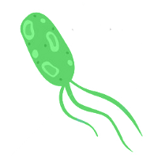
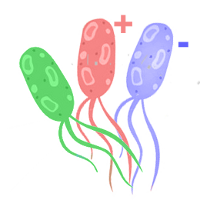
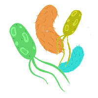

DuctApe
The missing link between genomics and phenomics
DuctApe is a software suite that will help
bioinformaticians to analyze genomes AND phenomic experiments.
The final purpose
of the program is to combine the genomic informations (encoded as KEGG pathways)
with the results of phenomic experiments (Phenotype Microarrays)
and highlight the genes that may be responsible for phenotypic variations.
DuctApe it's written in python and works as a command line tool for Unix environments.
Experimental setups
The three flavours of DuctApe
-

Single
Simple genomics and phenomics analyses on a single strain.
-

Mutants
One or more mutants of a reference strain can be added, (deletion and insertion). The mutants genome and phenome will be compared to the reference strain.
-

Pangenome
Multiple strains can be added simultaneously. The pangenome can be calculated using the BBH algorithm and the pangenome is used in the metabolic network reconstruction.
Flexible tools
The three modules of DuctApe
-

dgenome
- Maps the proteins to the KEGG database
- Constructs the pangenome
- Outputs stats about the input genomes
-

dape
- Project setup
- Metabolic network reconstruction
- Imports/exports KEGG data
-

dphenome
- Imports the Phenotype Microarray experiments
- Extracts the growth parameters and calculates the Activity Index
- Creates growth curves plots
- Checks the replica consistency
- Maps the Phenotype Microarray compounds to the KEGG database
- Outputs stats about the input phenome